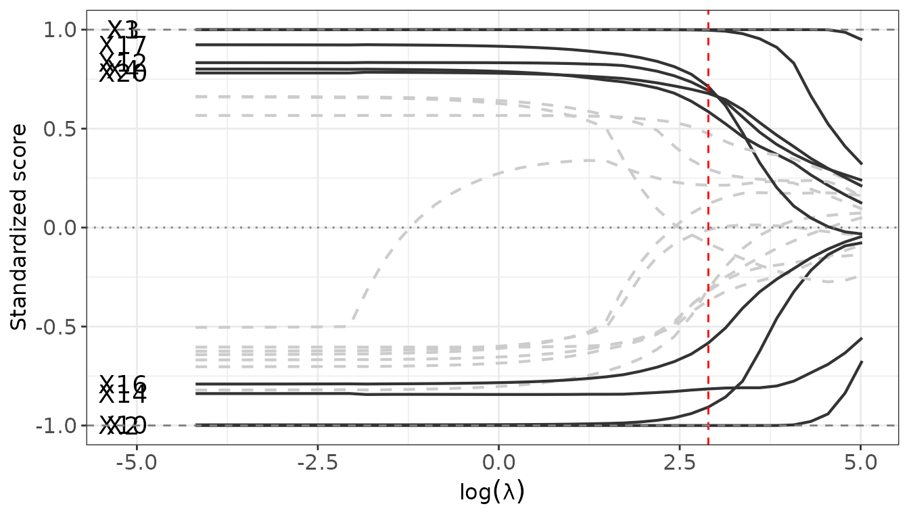

The induced smoothed lasso: methodology and algorithm
Gianluca Sottile
Giovanna Cilluffo
Vito M.R. Muggeo
Source:vignettes/islasso-methodology.Rmd
islasso-methodology.RmdThis vignette describes the estimator implemented in islasso, the algorithm used to compute it and some of its properties that are useful when interpreting the output.
1. Induced smoothing of the lasso
For the linear model y = X\beta + \varepsilon the lasso minimises \frac12\|y - X\beta\|^2 + \lambda\|\beta\|_1. A “pseudo” estimating equation is U(\beta) = -X^\top(y - X\beta) + \lambda\,\mathrm{sign}(\beta) = 0 , which is not differentiable at zero, so that the sandwich formula cannot be applied. The induced smoothing (IS) idea of Brown and Wang (2005) replaces U(\beta) by its expectation under perturbations drawn from the (approximate) sampling distribution of the estimator, \tilde U(\beta) = E_Z\{U(\beta + V^{1/2}Z)\}. Since the distribution of the lasso estimator has a mass at zero, Cilluffo et al. (2020) model it as the mixture c\,N(0,1) + (1-c)\,N(0, \epsilon^2) (\epsilon = 10^{-5}), and obtain the smoothed sign P_j(\beta_j) = c\,\{2\Phi(\beta_j/s_j) - 1\} + (1-c)\,\{2\Phi(\beta_j/(\epsilon s_j)) - 1\}, where s_j is the standard error of \hat\beta_j. With the elastic-net penalty and a generalised linear model (working weights W and working response z of the IRLS algorithm) the smoothed equation and its derivative are \tilde U(\beta) = -X^\top W(z - X\beta) + \lambda\{\alpha P(\beta) + (1-\alpha)\beta\}, \qquad \tilde U'(\beta) = X^\top W X + \lambda\,\mathrm{diag}\{\alpha P'(\beta) + 1 - \alpha\}, and the covariance matrix follows from the sandwich formula V = \phi\, \tilde U'(\hat\beta)^{-1}\, X^\top W X\, \tilde U'(\hat\beta)^{-1}. The standard errors s_j = \sqrt{V_{jj}} enter the smoothed sign, so \hat\beta and V are computed alternately until the standard errors stabilise.
2. A smooth convex objective
A key observation for the computations is that P_j is the derivative of G_j(b) = c\,E|b + s_jZ| + (1-c)\,E|b + \epsilon s_jZ|, where E|b + sZ| = b\{2\Phi(b/s) - 1\} + 2s\,\phi(b/s) is a smooth convex approximation of |b| (equal to |b| when s \to 0). Hence, at fixed standard errors, solving \tilde U(\beta) = 0 amounts to minimising the smooth and strictly convex function F(\beta) = \tfrac12 (z - X\beta)^\top W (z - X\beta) + \sum_j \lambda_j\{\alpha G_j(\beta_j) + (1-\alpha)\beta_j^2/2\}. The function below draws G for a few values of s (with c = 0.5):
g <- function(b, s) b * (2 * pnorm(b / s) - 1) + 2 * s * dnorm(b / s)
b <- seq(-1, 1, length.out = 401)
plot(b, abs(b), type = "l", lty = 3, ylab = "penalty", xlab = expression(beta))
for (s in c(0.05, 0.2, 0.4)) lines(b, 0.5 * g(b, s) + 0.5 * g(b, 1e-5 * s))
legend("top", c("|b|", "s = 0.05, 0.2, 0.4"), lty = c(3, 1), bty = "n")Two algorithms are available (argument inner of
is.control()):
-
"mm"(default): the majorise–minimise iteration \beta^{new} = \{X^\top W X + \lambda\,\mathrm{diag}(\alpha P(\beta)/\beta + 1 - \alpha)\}^{-1}X^\top W z; the quadratic \frac12\lambda P(\beta)\beta^{-1}b^2 majorises \lambda G(b) because G(\sqrt u) is concave in u, so F decreases at every step. This is the (undamped) iteration used since the first versions of the package. -
"newton": Newton’s method with Hessian \tilde U'(\beta) and an Armijo line search.
As in previous versions, for |\beta_j| < 10^{-6} (standardised scale) the smoothed sign is linearised, P_j(\beta_j) \approx \beta_j P_j(10^{-6})/10^{-6}.
3. Efficient linear algebra
During the iterations only the diagonal of V is needed, together with the pseudo hat values h_j = (\tilde U'^{-1}X^\top W X)_{jj} whose sum is the effective number of parameters. Writing \tilde U' = D + X^\top W X, with D diagonal, \mathrm{diag}(V/\phi) = \mathrm{diag}(\tilde U'^{-1}) - \Big(\sum_k D_k (\tilde U'^{-1})_{jk}^2\Big)_j, \qquad h_j = 1 - D_j(\tilde U'^{-1})_{jj}, so one Cholesky factorisation per iteration suffices. When p > 2n the package switches to the Woodbury identity: with \tilde X = W^{1/2}X and A = I_n + \tilde X D^{-1}\tilde X^\top, \tilde U'^{-1}\tilde X^\top = D^{-1}\tilde X^\top A^{-1}, so that every quantity is obtained from n \times n factorisations, at a cost O(n^2 p) instead of O(p^3); unpenalised columns (and columns with negligible curvature) are handled exactly through a Schur complement. The full matrix V is computed only once, at convergence.
The two back ends give the same results:
library(islasso)
sim <- simulXy(n = 40, p = 120, beta = c(2, -1.5, 1, rep(0, 117)), seed = 1)
o1 <- islasso(y ~ ., data = sim$data, lambda = 6, control = is.control(solver = "dense"))
o2 <- islasso(y ~ ., data = sim$data, lambda = 6, control = is.control(solver = "woodbury"))
all.equal(coef(o1), coef(o2))
#> [1] TRUE
all.equal(o1$se, o2$se)
#> [1] TRUE4. Pseudo hat values and degrees of freedom
The values h_j (column
Df of the summary) quantify the amount of shrinkage of each
coefficient: h_j = 1 for unpenalised
coefficients, h_j \approx 1 for strong
effects and h_j \approx 0 for
coefficients shrunk towards zero. Their sum is used as the model degrees
of freedom in the information criteria (AIC, BIC, …).
sim <- simulXy(n = 100, p = 20, beta = c(1, -1, 0.5, rep(0, 17)), seed = 2)
fit <- islasso(y ~ ., data = sim$data, lambda = 10)
round(fit$internal$hi, 3)
#> (Intercept) X1 X2 X3 X4 X5
#> 1.000 1.000 1.000 0.995 0.153 0.000
#> X6 X7 X8 X9 X10 X11
#> 0.602 0.618 0.724 0.731 0.073 0.121
#> X12 X13 X14 X15 X16 X17
#> 0.616 0.614 0.658 0.756 0.639 0.631
#> X18 X19 X20
#> 0.660 0.729 0.901
fit$rank
#> [1] 13.221735. Standardized scores along the path
For the lasso the optimality conditions read x_j^\top(y - X\hat\beta) =
\lambda\,\mathrm{sign}(\hat\beta_j) when \hat\beta_j \neq 0 and |x_j^\top(y - X\hat\beta)| \le \lambda
otherwise. In the induced smoothed lasso the sign is replaced by its
smooth version, so that at the solution the standardized score
s_j(\lambda) = \frac{x_j^\top W(z - X\hat\beta)}{\lambda} = \alpha
P_j(\hat\beta_j) + (1-\alpha)\hat\beta_j
(computed on the standardized covariates) is close to \pm 1 for the covariates with a clear effect
and strictly inside (-1, 1) for those
shrunk towards zero: it moves towards \pm
1 as \lambda decreases to the
value at which the covariate becomes relevant. The scores are stored in
the Score component of islasso.path() and
plotted with yvar = "score":
sim3 <- simulXy(n = 100, p = 20, beta = c(1.5, -1, 0.5, rep(0, 17)), seed = 3)
path3 <- islasso.path(y ~ ., data = sim3$data, nlambda = 40)
plot(path3, yvar = "score", gof = "BIC", label = TRUE)
They complement the coefficient profiles
(yvar = "coefficients"), which shrink smoothly towards zero
without ever reaching it. The gradient of the smoothed estimating
equation (yvar = "gradient"), instead, is zero at the
solution up to numerical precision and is only a check of
convergence.
6. Standard errors of the coefficients shrunk to zero
No estimate is exactly zero, and the Wald statistic \hat\beta_j/s_j is the tool to judge the covariates. For coefficients that are shrunk to (practically) zero, the term \lambda P'_j \propto 1/s_j dominates \tilde U' and the IS fixed point pushes s_j towards very small values: their standard errors (and thus confidence intervals) depend on the convergence tolerance and on the numerical constants of the algorithm, whereas the Wald statistics, hence the p-values, are stable:
f1 <- islasso(y ~ ., data = sim$data, lambda = 10, control = is.control(tol = 1e-4))
f2 <- islasso(y ~ ., data = sim$data, lambda = 10, control = is.control(tol = 1e-6))
noise <- 5:21
summary(f1$se[noise] / f2$se[noise])
#> Min. 1st Qu. Median Mean 3rd Qu. Max.
#> 1.001 1.016 1.045 1.879 1.063 13.901
round(cbind(p.tol4 = 2 * pnorm(-abs(coef(f1) / f1$se)),
p.tol6 = 2 * pnorm(-abs(coef(f2) / f2$se)))[1:8, ], 3)
#> p.tol4 p.tol6
#> (Intercept) 0.383 0.384
#> X1 0.000 0.000
#> X2 0.000 0.000
#> X3 0.003 0.003
#> X4 1.000 1.000
#> X5 1.000 1.000
#> X6 0.919 0.914
#> X7 0.936 0.934For the active coefficients both the estimates and the standard
errors are well defined. Note also that the standard errors are updated
by damped fixed-point iterations (v \leftarrow
v + 0.1\,(v_{new} - v)) which stop when the change of the
standard errors is smaller than 10\timestol: their accuracy is
therefore of a few percent at the default tolerance and can be increased
by decreasing tol.
References
- Brown B.M., Wang Y.G. (2005). Standard errors and covariance matrices for smoothed rank estimators. Biometrika 92, 149–158.
- Cilluffo G., Sottile G., La Grutta S., Muggeo V.M.R. (2020). The induced smoothed lasso: a practical framework for hypothesis testing in high dimensional regression. Statistical Methods in Medical Research 29(3), 765–777.